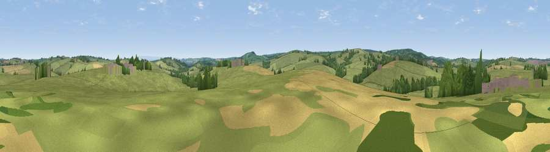

Viewpoint near Troswell
#43103 in England · top 92% of its area beats it · near TroswellWhere it is
The exact computed spot (SX 23875 90875). Click the marker for map links.
The view, rendered

A 360° render of this exact spot computed from the terrain model, tree cover and land cover — summer colours, afternoon light, calibrated against photographs of famous viewpoints. Real trees, hedges and buildings will differ in detail.
The panorama
Grey silhouette: terrain skyline in each direction (720 bearings, Earth curvature and refraction included). Dashed green: skyline with trees (+15 m) and buildings (+8 m) as obstacles. Blue strip: how far the ground is visible on each bearing.
Where the view opens
Wedge length = distance to the farthest visible ground on that bearing (vegetation-aware). Rings at 10, 25 and 50 km.
What fills the view
82% grassland · 10% cropland · 7% woodland · 2% built-up
Angular shares of the visible panorama (visual magnitude), not map area. Landscape diversity 0.28 (0–1 Shannon).
Key numbers
More beautiful places nearby
The staircase of upgrades: each row has a higher view potential than everything closer. Driving times are estimates from straight-line distance, calibrated against real road routing — check an actual route before setting out.
| Place | Direction | Drive | Score |
|---|---|---|---|
| Viewpoint near Tremaine | SW · 2 km | ~5 min | 56.2 |
| Viewpoint near Tresmeer | SSW · 3 km | ~7 min | 57.7 |
| Viewpoint near Warbstow | W · 4 km | ~9 min | 71.2 |
| Viewpoint near Poundstock | NW · 10 km | ~20 min | 79.7 |
| Tresparrett Down | W · 11 km | ~20 min | 80.8 |
| Viewpoint near Crackington Haven | NW · 11 km | ~21 min | 81.8 |
| Viewpoint near Lesnewth | WNW · 11 km | ~21 min | 87.7 |
| Viewpoint near Crackington Haven | WNW · 11 km | ~21 min | 88.1 |
50.69079, -4.49490 · source: screening · position refined by local search. Computed location — check access rights before visiting.